<!doctype html>
<html lang="en">
    <head>
        <meta charset="utf-8">
        <meta http-equiv="X-UA-Compatible" content="IE=edge">
        <meta name="viewport" content="initial-scale=1,user-scalable=no,maximum-scale=1,width=device-width">
        <meta name="mobile-web-app-capable" content="yes">
        <meta name="apple-mobile-web-app-capable" content="yes">
        <link rel="stylesheet" href="css/leaflet.css">
        <link rel="stylesheet" href="css/L.Control.Layers.Tree.css">
        <link rel="stylesheet" href="css/qgis2web.css">
        <link rel="stylesheet" href="css/fontawesome-all.min.css">
        <link rel="stylesheet" href="css/leaflet-search.css">
        <link rel="stylesheet" href="css/leaflet.photon.css">
        <link rel="stylesheet" href="css/leaflet-measure.css">
        <style>
        html, body, #map {
            width: 100%;
            height: 100%;
            padding: 0;
            margin: 0;
        }
        </style>
        <title>Sub-bazinulLapusna (QFieldCloud)</title>
    </head>
    <body>
        <div id="map">
        </div>
        <script src="js/qgis2web_expressions.js"></script>
        <script src="js/leaflet.js"></script>
        <script src="js/L.Control.Layers.Tree.min.js"></script>
        <script src="js/leaflet.rotatedMarker.js"></script>
        <script src="js/leaflet.pattern.js"></script>
        <script src="js/leaflet-hash.js"></script>
        <script src="js/Autolinker.min.js"></script>
        <script src="js/rbush.min.js"></script>
        <script src="js/labelgun.min.js"></script>
        <script src="js/labels.js"></script>
        <script src="js/leaflet.wms.js"></script>
        <script src="js/leaflet.photon.js"></script>
        <script src="js/leaflet-measure.js"></script>
        <script src="js/leaflet-search.js"></script>
        <script src="data/Photos_3.js"></script>
        <script src="data/LacuriLpuna_4.js"></script>
        <script src="data/Lpuna_5.js"></script>
        <script src="data/RulLpuna_6.js"></script>
        <script>
        var map = L.map('map', {
            zoomControl:false, maxZoom:28, minZoom:1
        }).fitBounds([[46.93735923622328,28.146353463515023],[47.127338679056734,28.479488663475752]]);
        var hash = new L.Hash(map);
        map.attributionControl.setPrefix('<a href="https://github.com/tomchadwin/qgis2web" target="_blank">qgis2web</a> &middot; <a href="https://leafletjs.com" title="A JS library for interactive maps">Leaflet</a> &middot; <a href="https://qgis.org">QGIS</a>');
        var autolinker = new Autolinker({truncate: {length: 30, location: 'smart'}});
        // remove popup's row if "visible-with-data"
        function removeEmptyRowsFromPopupContent(content, feature) {
         var tempDiv = document.createElement('div');
         tempDiv.innerHTML = content;
         var rows = tempDiv.querySelectorAll('tr');
         for (var i = 0; i < rows.length; i++) {
             var td = rows[i].querySelector('td.visible-with-data');
             var key = td ? td.id : '';
             if (td && td.classList.contains('visible-with-data') && feature.properties[key] == null) {
                 rows[i].parentNode.removeChild(rows[i]);
             }
         }
         return tempDiv.innerHTML;
        }
        // modify popup if contains media
        function addClassToPopupIfMedia(content, popup) {
            var tempDiv = document.createElement('div');
            tempDiv.innerHTML = content;
            var imgTd = tempDiv.querySelector('td img');
            if (imgTd) {
                var src = imgTd.getAttribute('src');
                if (/\.(jpg|jpeg|png|gif|bmp|webp|avif)$/i.test(src)) {
                    popup._contentNode.classList.add('media');
                    setTimeout(function() {
                        popup.update();
                    }, 10);
                } else if (/\.(mp3|wav|ogg|aac)$/i.test(src)) {
                    var audio = document.createElement('audio');
                    audio.controls = true;
                    audio.src = src;
                    imgTd.parentNode.replaceChild(audio, imgTd);
                    popup._contentNode.classList.add('media');
                    setTimeout(function() {
                        popup.setContent(tempDiv.innerHTML);
                        popup.update();
                    }, 10);
                } else if (/\.(mp4|webm|ogg|mov)$/i.test(src)) {
                    var video = document.createElement('video');
                    video.controls = true;
                    video.src = src;
                    video.style.width = "400px";
                    video.style.height = "300px";
                    video.style.maxHeight = "60vh";
                    video.style.maxWidth = "60vw";
                    imgTd.parentNode.replaceChild(video, imgTd);
                    popup._contentNode.classList.add('media');
                    // Aggiorna il popup quando il video carica i metadati
                    video.addEventListener('loadedmetadata', function() {
                        popup.update();
                    });
                    setTimeout(function() {
                        popup.setContent(tempDiv.innerHTML);
                        popup.update();
                    }, 10);
                } else {
                    popup._contentNode.classList.remove('media');
                }
            } else {
                popup._contentNode.classList.remove('media');
            }
        }
        var zoomControl = L.control.zoom({
            position: 'topleft'
        }).addTo(map);
        var measureControl = new L.Control.Measure({
            position: 'topleft',
            primaryLengthUnit: 'meters',
            secondaryLengthUnit: 'kilometers',
            primaryAreaUnit: 'sqmeters',
            secondaryAreaUnit: 'hectares'
        });
        measureControl.addTo(map);
        document.getElementsByClassName('leaflet-control-measure-toggle')[0].innerHTML = '';
        document.getElementsByClassName('leaflet-control-measure-toggle')[0].className += ' fas fa-ruler';
        var bounds_group = new L.featureGroup([]);
        function setBounds() {
        }
        map.createPane('pane_OSMStandard_0');
        map.getPane('pane_OSMStandard_0').style.zIndex = 400;
        var layer_OSMStandard_0 = L.tileLayer('http://tile.openstreetmap.org/{z}/{x}/{y}.png', {
            pane: 'pane_OSMStandard_0',
            opacity: 1.0,
            attribution: '<a href="https://www.openstreetmap.org/copyright">© OpenStreetMap contributors, CC-BY-SA</a>',
            minZoom: 1,
            maxZoom: 28,
            minNativeZoom: 0,
            maxNativeZoom: 19
        });
        layer_OSMStandard_0;
        map.addLayer(layer_OSMStandard_0);
        map.createPane('pane_GoogleSatellite_1');
        map.getPane('pane_GoogleSatellite_1').style.zIndex = 401;
        var layer_GoogleSatellite_1 = L.tileLayer('https://mt1.google.com/vt/lyrs=s&x={x}&y={y}&z={z}', {
            pane: 'pane_GoogleSatellite_1',
            opacity: 1.0,
            attribution: '',
            minZoom: 1,
            maxZoom: 28,
        });
        layer_GoogleSatellite_1;
        map.addLayer(layer_GoogleSatellite_1);
        map.createPane('pane_2016OrtofotoRM_2');
        map.getPane('pane_2016OrtofotoRM_2').style.zIndex = 402;
        var layer_2016OrtofotoRM_2 = L.WMS.layer("https://geodata.gov.md/geoserver/orthophoto/wms", "orthophoto:Ortofoto_2016_RM", {
            pane: 'pane_2016OrtofotoRM_2',
            format: 'image/png',
            uppercase: true,
            transparent: true,
            continuousWorld : true,
            tiled: true,
            info_format: 'text/html',
            opacity: 1,
            identify: false,
            attribution: '',
        });
        map.addLayer(layer_2016OrtofotoRM_2);
        function pop_Photos_3(feature, layer) {
            var popupContent = '<table>\
                    <tr>\
                        <th scope="row">photo</th>\
                        <td>' + (feature.properties['photo'] !== null ? '' : '') + '</td>\
                    </tr>\
                </table>';
            var content = removeEmptyRowsFromPopupContent(popupContent, feature);
			layer.on('popupopen', function(e) {
				addClassToPopupIfMedia(content, e.popup);
			});
			layer.bindPopup(content, { maxHeight: 400 });
        }

        function style_Photos_3_0() {
            return {
                pane: 'pane_Photos_3',
        rotationAngle: 0.0,
        rotationOrigin: 'center center',
        icon: L.icon({
            iconUrl: 'markers/Photos_3.svg',
            iconSize: [19.0, 19.0]
        }),
                interactive: true,
            }
        }
        map.createPane('pane_Photos_3');
        map.getPane('pane_Photos_3').style.zIndex = 403;
        map.getPane('pane_Photos_3').style['mix-blend-mode'] = 'normal';
        var layer_Photos_3 = new L.geoJson(json_Photos_3, {
            attribution: '',
            interactive: true,
            dataVar: 'json_Photos_3',
            layerName: 'layer_Photos_3',
            pane: 'pane_Photos_3',
            onEachFeature: pop_Photos_3,
            pointToLayer: function (feature, latlng) {
                var context = {
                    feature: feature,
                    variables: {}
                };
                return L.marker(latlng, style_Photos_3_0(feature));
            },
        });
        bounds_group.addLayer(layer_Photos_3);
        map.addLayer(layer_Photos_3);
        function pop_LacuriLpuna_4(feature, layer) {
            var popupContent = '<table>\
                    <tr>\
                        <td colspan="2">' + (feature.properties['fid'] !== null ? autolinker.link(String(feature.properties['fid']).replace(/'/g, '\'').toLocaleString()) : '') + '</td>\
                    </tr>\
                    <tr>\
                        <th scope="row">NrCadastral</th>\
                        <td>' + (feature.properties['NrCadastral'] !== null ? autolinker.link(String(feature.properties['NrCadastral']).replace(/'/g, '\'').toLocaleString()) : '') + '</td>\
                    </tr>\
                    <tr>\
                        <th scope="row">Înălțime la coronament [m]</th>\
                        <td>' + (feature.properties['Înălțime la coronament [m]'] !== null ? autolinker.link(String(feature.properties['Înălțime la coronament [m]']).replace(/'/g, '\'').toLocaleString()) : '') + '</td>\
                    </tr>\
                    <tr>\
                        <th scope="row">Lățime la bază [m]</th>\
                        <td>' + (feature.properties['Lățime la bază [m]'] !== null ? autolinker.link(String(feature.properties['Lățime la bază [m]']).replace(/'/g, '\'').toLocaleString()) : '') + '</td>\
                    </tr>\
                    <tr>\
                        <th scope="row">Suprafața lacului [ha]</th>\
                        <td>' + (feature.properties['Suprafața lacului [ha]'] !== null ? autolinker.link(String(feature.properties['Suprafața lacului [ha]']).replace(/'/g, '\'').toLocaleString()) : '') + '</td>\
                    </tr>\
                    <tr>\
                        <th scope="row">Volumul maxim [m3]</th>\
                        <td>' + (feature.properties['Volumul maxim [m3]'] !== null ? autolinker.link(String(feature.properties['Volumul maxim [m3]']).replace(/'/g, '\'').toLocaleString()) : '') + '</td>\
                    </tr>\
                    <tr>\
                        <th scope="row">Nivelul curent [%]</th>\
                        <td>' + (feature.properties['Nivelul curent [%]'] !== null ? autolinker.link(String(feature.properties['Nivelul curent [%]']).replace(/'/g, '\'').toLocaleString()) : '') + '</td>\
                    </tr>\
                    <tr>\
                        <th scope="row">Lățime coronament (A) [m]</th>\
                        <td>' + (feature.properties['Lățime coronament (A) [m]'] !== null ? autolinker.link(String(feature.properties['Lățime coronament (A) [m]']).replace(/'/g, '\'').toLocaleString()) : '') + '</td>\
                    </tr>\
                    <tr>\
                        <th scope="row">Lungime coronament (B) [m]</th>\
                        <td>' + (feature.properties['Lungime coronament (B) [m]'] !== null ? autolinker.link(String(feature.properties['Lungime coronament (B) [m]']).replace(/'/g, '\'').toLocaleString()) : '') + '</td>\
                    </tr>\
                    <tr>\
                        <th scope="row">Panta amonte [Raport]</th>\
                        <td>' + (feature.properties['Panta amonte [Raport]'] !== null ? autolinker.link(String(feature.properties['Panta amonte [Raport]']).replace(/'/g, '\'').toLocaleString()) : '') + '</td>\
                    </tr>\
                    <tr>\
                        <th scope="row">Panta aval [Raport]</th>\
                        <td>' + (feature.properties['Panta aval [Raport]'] !== null ? autolinker.link(String(feature.properties['Panta aval [Raport]']).replace(/'/g, '\'').toLocaleString()) : '') + '</td>\
                    </tr>\
                    <tr>\
                        <th scope="row">Lățime deversor (C) [m]</th>\
                        <td>' + (feature.properties['Lățime deversor (C) [m]'] !== null ? autolinker.link(String(feature.properties['Lățime deversor (C) [m]']).replace(/'/g, '\'').toLocaleString()) : '') + '</td>\
                    </tr>\
                    <tr>\
                        <th scope="row">Diametru golire de fund (D) [mm]</th>\
                        <td>' + (feature.properties['Diametru golire de fund (D) [mm]'] !== null ? autolinker.link(String(feature.properties['Diametru golire de fund (D) [mm]']).replace(/'/g, '\'').toLocaleString()) : '') + '</td>\
                    </tr>\
                    <tr>\
                        <th scope="row">Starea de siguranța la zi </th>\
                        <td>' + (feature.properties['Starea de siguranța la zi '] !== null ? autolinker.link(String(feature.properties['Starea de siguranța la zi ']).replace(/'/g, '\'').toLocaleString()) : '') + '</td>\
                    </tr>\
                    <tr>\
                        <th scope="row">Recomandări </th>\
                        <td>' + (feature.properties['Recomandări '] !== null ? autolinker.link(String(feature.properties['Recomandări ']).replace(/'/g, '\'').toLocaleString()) : '') + '</td>\
                    </tr>\
                </table>';
            var content = removeEmptyRowsFromPopupContent(popupContent, feature);
			layer.on('popupopen', function(e) {
				addClassToPopupIfMedia(content, e.popup);
			});
			layer.bindPopup(content, { maxHeight: 400 });
        }

        function style_LacuriLpuna_4_0() {
            return {
                pane: 'pane_LacuriLpuna_4',
                opacity: 1,
                color: 'rgba(35,35,35,0.4)',
                dashArray: '',
                lineCap: 'butt',
                lineJoin: 'miter',
                weight: 1.0, 
                fill: true,
                fillOpacity: 1,
                fillColor: 'rgba(113,198,232,0.4)',
                interactive: true,
            }
        }
        map.createPane('pane_LacuriLpuna_4');
        map.getPane('pane_LacuriLpuna_4').style.zIndex = 404;
        map.getPane('pane_LacuriLpuna_4').style['mix-blend-mode'] = 'normal';
        var layer_LacuriLpuna_4 = new L.geoJson(json_LacuriLpuna_4, {
            attribution: '',
            interactive: true,
            dataVar: 'json_LacuriLpuna_4',
            layerName: 'layer_LacuriLpuna_4',
            pane: 'pane_LacuriLpuna_4',
            onEachFeature: pop_LacuriLpuna_4,
            style: style_LacuriLpuna_4_0,
        });
        bounds_group.addLayer(layer_LacuriLpuna_4);
        map.addLayer(layer_LacuriLpuna_4);
        function pop_Lpuna_5(feature, layer) {
            var popupContent = '<table>\
                </table>';
            var content = removeEmptyRowsFromPopupContent(popupContent, feature);
			layer.on('popupopen', function(e) {
				addClassToPopupIfMedia(content, e.popup);
			});
			layer.bindPopup(content, { maxHeight: 400 });
        }

        function style_Lpuna_5_0() {
            return {
                pane: 'pane_Lpuna_5',
                opacity: 1,
                color: 'rgba(247,255,79,1.0)',
                dashArray: '',
                lineCap: 'square',
                lineJoin: 'bevel',
                weight: 2.0,
                fillOpacity: 0,
                interactive: true,
            }
        }
        map.createPane('pane_Lpuna_5');
        map.getPane('pane_Lpuna_5').style.zIndex = 405;
        map.getPane('pane_Lpuna_5').style['mix-blend-mode'] = 'normal';
        var layer_Lpuna_5 = new L.geoJson(json_Lpuna_5, {
            attribution: '',
            interactive: true,
            dataVar: 'json_Lpuna_5',
            layerName: 'layer_Lpuna_5',
            pane: 'pane_Lpuna_5',
            onEachFeature: pop_Lpuna_5,
            style: style_Lpuna_5_0,
        });
        bounds_group.addLayer(layer_Lpuna_5);
        map.addLayer(layer_Lpuna_5);
        function pop_RulLpuna_6(feature, layer) {
            var popupContent = '<table>\
                </table>';
            var content = removeEmptyRowsFromPopupContent(popupContent, feature);
			layer.on('popupopen', function(e) {
				addClassToPopupIfMedia(content, e.popup);
			});
			layer.bindPopup(content, { maxHeight: 400 });
        }

        function style_RulLpuna_6_0() {
            return {
                pane: 'pane_RulLpuna_6',
                opacity: 1,
                color: 'rgba(1,65,255,1.0)',
                dashArray: '',
                lineCap: 'square',
                lineJoin: 'bevel',
                weight: 2.0,
                fillOpacity: 0,
                interactive: true,
            }
        }
        map.createPane('pane_RulLpuna_6');
        map.getPane('pane_RulLpuna_6').style.zIndex = 406;
        map.getPane('pane_RulLpuna_6').style['mix-blend-mode'] = 'normal';
        var layer_RulLpuna_6 = new L.geoJson(json_RulLpuna_6, {
            attribution: '',
            interactive: true,
            dataVar: 'json_RulLpuna_6',
            layerName: 'layer_RulLpuna_6',
            pane: 'pane_RulLpuna_6',
            onEachFeature: pop_RulLpuna_6,
            style: style_RulLpuna_6_0,
        });
        bounds_group.addLayer(layer_RulLpuna_6);
        map.addLayer(layer_RulLpuna_6);
        const url = {"Nominatim OSM": "https://nominatim.openstreetmap.org/search?format=geojson&addressdetails=1&",
        "France BAN": "https://api-adresse.data.gouv.fr/search/?"}
        var photonControl = L.control.photon({
            url: url["Nominatim OSM"],
            feedbackLabel: '',
            position: 'topleft',
            includePosition: true,
            initial: true,
            // resultsHandler: myHandler,
        }).addTo(map);
        photonControl._container.childNodes[0].style.borderRadius="10px"
        // Create a variable to store the geoJSON data
        var x = null;
        // Create a variable to store the marker
        var marker = null;
        // Add an event listener to the Photon control to create a marker from the returned geoJSON data
        var z = null;
        photonControl.on('selected', function(e) {
            console.log(photonControl.search.resultsContainer);
            if (x != null) {
                map.removeLayer(obj3.marker);
                map.removeLayer(x);
            }
            obj2.gcd = e.choice;
            x = L.geoJSON(obj2.gcd).addTo(map);
            var label = typeof obj2.gcd.properties.label === 'undefined' ? obj2.gcd.properties.display_name : obj2.gcd.properties.label;
            obj3.marker = L.marker(x.getLayers()[0].getLatLng()).bindPopup(label).addTo(map);
            map.setView(x.getLayers()[0].getLatLng(), 17);
            z = typeof e.choice.properties.label === 'undefined'? e.choice.properties.display_name : e.choice.properties.label;
            console.log(e);
            e.target.input.value = z;
        });
        var search = document.getElementsByClassName("leaflet-photon leaflet-control")[0];
        search.classList.add("leaflet-control-search")
        search.style.display = "flex";
        search.style.backgroundColor="rgba(255,255,255,0.5)" 

        // Create the new button element
        var button = document.createElement("div");
        button.id = "gcd-button-control";
        button.className = "gcd-gl-btn fa fa-search search-button";

        // Insert the button at the beginning of the search control
        search.insertBefore(button, search.firstChild);
        last = search.lastChild;
        last.style.display = "none";
        button.addEventListener("click", function (e) {
            if (last.style.display === "none") {
                last.style.display = "block";
            } else {
                last.style.display = "none";
            }
        });
        var overlaysTree = [
            {label: ' Râul Lăpușna', layer: layer_RulLpuna_6},
            {label: ' Lăpușna', layer: layer_Lpuna_5},
            {label: ' Lacuri Lăpușna', layer: layer_LacuriLpuna_4},
            {label: ' Photos', layer: layer_Photos_3},
            {label: "2016 Ortofoto RM", layer: layer_2016OrtofotoRM_2},
            {label: "Google Satellite", layer: layer_GoogleSatellite_1},
            {label: "OSM Standard", layer: layer_OSMStandard_0},]
        var lay = L.control.layers.tree(null, overlaysTree,{
            //namedToggle: true,
            //selectorBack: false,
            //closedSymbol: '&#8862; &#x1f5c0;',
            //openedSymbol: '&#8863; &#x1f5c1;',
            //collapseAll: 'Collapse all',
            //expandAll: 'Expand all',
            collapsed: false, 
        });
        lay.addTo(map);
		document.addEventListener("DOMContentLoaded", function() {
            // set new Layers List height which considers toggle icon
            function newLayersListHeight() {
                var layerScrollbarElement = document.querySelector('.leaflet-control-layers-scrollbar');
                if (layerScrollbarElement) {
                    var layersListElement = document.querySelector('.leaflet-control-layers-list');
                    var originalHeight = layersListElement.style.height 
                        || window.getComputedStyle(layersListElement).height;
                    var newHeight = parseFloat(originalHeight) - 50;
                    layersListElement.style.height = newHeight + 'px';
                }
            }
            var isLayersListExpanded = true;
            var controlLayersElement = document.querySelector('.leaflet-control-layers');
            var toggleLayerControl = document.querySelector('.leaflet-control-layers-toggle');
            // toggle Collapsed/Expanded and apply new Layers List height
            toggleLayerControl.addEventListener('click', function() {
                if (isLayersListExpanded) {
                    controlLayersElement.classList.remove('leaflet-control-layers-expanded');
                } else {
                    controlLayersElement.classList.add('leaflet-control-layers-expanded');
                }
                isLayersListExpanded = !isLayersListExpanded;
                newLayersListHeight()
            });	
			// apply new Layers List height if toggle layerstree
			if (controlLayersElement) {
				controlLayersElement.addEventListener('click', function(event) {
					var toggleLayerHeaderPointer = event.target.closest('.leaflet-layerstree-header-pointer span');
					if (toggleLayerHeaderPointer) {
						newLayersListHeight();
					}
				});
			}
            // Collapsed/Expanded at Start to apply new height
            setTimeout(function() {
                toggleLayerControl.click();
            }, 10);
            setTimeout(function() {
                toggleLayerControl.click();
            }, 10);
            // Collapsed touch/small screen
            var isSmallScreen = window.innerWidth < 650;
            if (isSmallScreen) {
                setTimeout(function() {
                    controlLayersElement.classList.remove('leaflet-control-layers-expanded');
                    isLayersListExpanded = !isLayersListExpanded;
                }, 500);
            }  
        });       
        setBounds();
        map.addControl(new L.Control.Search({
            layer: layer_LacuriLpuna_4,
            initial: false,
            hideMarkerOnCollapse: true,
            propertyName: 'NrCadastral'}));
        if (typeof url === 'undefined') {
            document.getElementsByClassName('search-button')[0].className += ' fa fa-binoculars';
        } else {
            document.getElementsByClassName('search-button')[1].className += ' fa fa-binoculars';
        }
        </script>        
    </body>
</html>
